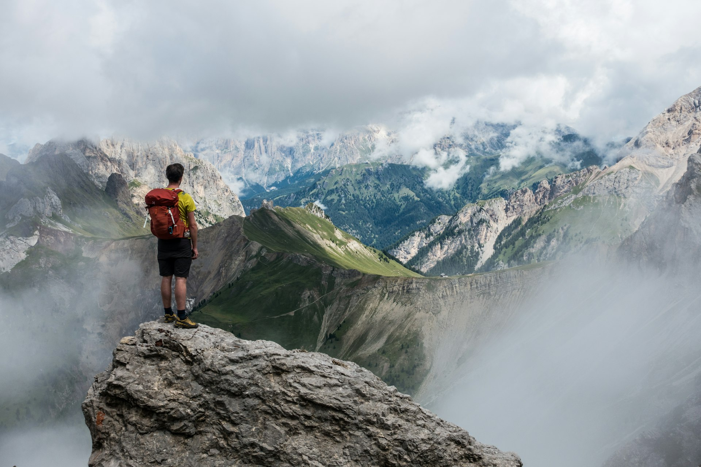

Group Facilitator
Lead small groups through the weekend's activities. Facilitate discussions, support teamwork, and ensure every participant feels included and challenged.
YMAW is powered by dedicated men who volunteer their time to positively influence the next generation. Join the production team.
The critical window for reaching teenage boys is middle and high school. YMAW production team members step into that window as mentors, guides, and role models — creating a safe space for boys to be challenged, supported, and seen.
Our volunteers come from all walks of life. What they share is a commitment to showing up for young men who need positive male influences. Many of our production team members say volunteering at YMAW is one of the most meaningful experiences of their lives.

Lead small groups through the weekend's activities. Facilitate discussions, support teamwork, and ensure every participant feels included and challenged.
Run specific activity stations — hiking, orienteering, bushcraft, or team challenges. Share your skills and passion for the outdoors.
Keep the weekend running smoothly. Meal coordination, site management, equipment setup, and behind-the-scenes operations.
Oversee participant safety throughout the weekend. Certified first aid training is an asset but not required — we provide training.
Production team members arrive Thursday evening (one day before participants) for setup and team preparation. You'll stay through Sunday departure. The total commitment is approximately four days.
All meals and accommodation are provided. You'll receive training on group facilitation, safety protocols, and YMAW's approach to working with teenage boys before the weekend begins.
Beyond the deep satisfaction of mentoring young men, production team members consistently report personal growth, lasting friendships with fellow volunteers, and a renewed sense of purpose.
YMAW is connected with the ManKind Project, Boys to Men, and other organizations dedicated to healthy masculinity — joining our team connects you to a larger community of men doing meaningful work.
"Volunteering at YMAW reminded me why this work matters. Watching a quiet kid find his voice over a weekend — there's nothing like it."
— YMAW Production Team Member
We're always looking for dedicated men who want to enrich the YMAW experience. No prior outdoor experience required — just a willingness to lead by example.